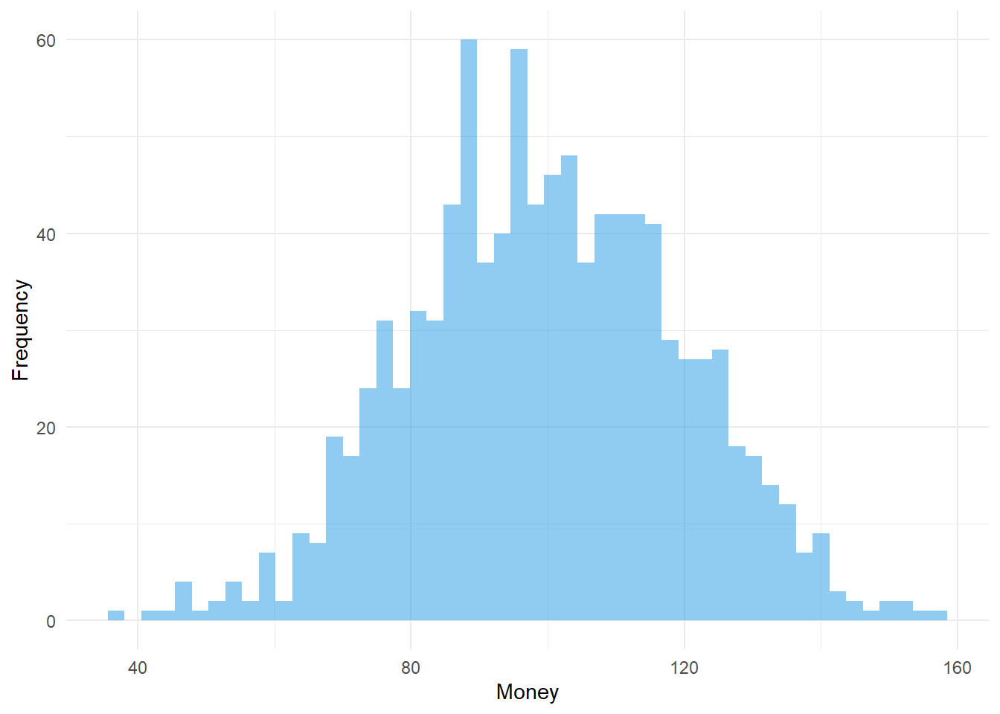

Attache Paket: 'dplyr'Die folgenden Objekte sind maskiert von 'package:stats':
filter, lagDie folgenden Objekte sind maskiert von 'package:base':
intersect, setdiff, setequal, unionHubert Baechli
At beginning i load some packets for nicer plots
Attache Paket: 'dplyr'Die folgenden Objekte sind maskiert von 'package:stats':
filter, lagDie folgenden Objekte sind maskiert von 'package:base':
intersect, setdiff, setequal, unionand some global definition as the Population from the paper and some more for playing.
nA = 5000 # number of Agents
ID = seq_len(nA) # ID of the Agents
M0pop = 100 # Mean amount of Money in the Start-Population
# generating Start-Population
CHF_T0 <- data.frame( ID = ID,
PopNorm = sort(
rnorm(nA, mean = M0pop, sd = 0.2 * M0pop)
),
PopUnif = sort(
runif(nA, min = 0, max = M0pop *2)
),
PopEven = rep(M0pop, times = nA)
)Fig01 <- pivot_longer(data.frame(CHF_T0),
cols = !matches("ID"),
names_to = "Population",
values_to = "Money"
)
Fig01$Population <- factor(Fig01$Population,
levels = c("PopNorm",
"PopEven",
"PopUnif")
)
ggplot(data = Fig01, aes(x = ID, y = Money, color = Population)) +
geom_line(linewidth = 1) +
scale_color_manual(name = "Population's",
values = c("PopNorm" = 4,
"PopEven" = 3,
"PopUnif" = 2)) +
theme_light() +
theme(legend.position = c(0.01, 0.99),
legend.justification = c(0, 1),
legend.background = element_rect(fill = "white"))Warning: A numeric `legend.position` argument in `theme()` was deprecated in ggplot2
3.5.0.
ℹ Please use the `legend.position.inside` argument of `theme()` instead.
---
title: "Notebook"
author: "Hubert Baechli"
---
# Final Version
## Definitions
At beginning i load some packets for nicer plots
```{r}
library(tidyr)
library(dplyr)
library(ggplot2)
```
and some global definition as the Population from the paper and some more for playing.
```{r}
nA = 5000 # number of Agents
ID = seq_len(nA) # ID of the Agents
M0pop = 100 # Mean amount of Money in the Start-Population
# generating Start-Population
CHF_T0 <- data.frame( ID = ID,
PopNorm = sort(
rnorm(nA, mean = M0pop, sd = 0.2 * M0pop)
),
PopUnif = sort(
runif(nA, min = 0, max = M0pop *2)
),
PopEven = rep(M0pop, times = nA)
)
```
### Fig01: Start Populations
```{r}
Fig01 <- pivot_longer(data.frame(CHF_T0),
cols = !matches("ID"),
names_to = "Population",
values_to = "Money"
)
Fig01$Population <- factor(Fig01$Population,
levels = c("PopNorm",
"PopEven",
"PopUnif")
)
ggplot(data = Fig01, aes(x = ID, y = Money, color = Population)) +
geom_line(linewidth = 1) +
scale_color_manual(name = "Population's",
values = c("PopNorm" = 4,
"PopEven" = 3,
"PopUnif" = 2)) +
theme_light() +
theme(legend.position = c(0.01, 0.99),
legend.justification = c(0, 1),
legend.background = element_rect(fill = "white"))
```